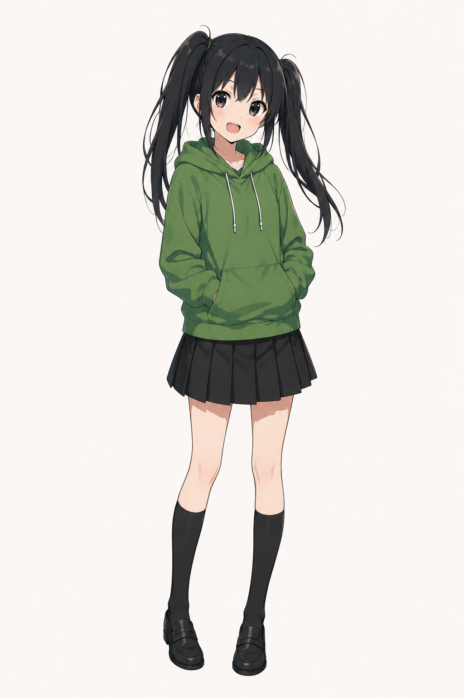
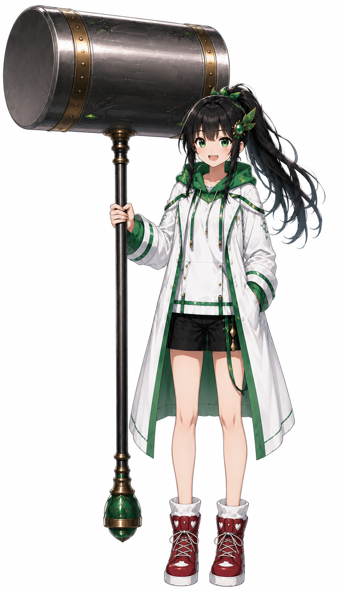

CLICK: 変身！
THE MAGIC GIRL
巴 和葉 ともえ かずは
好奇心のままに、
風を追いかける。
- ROLE
- MAGICAL GIRL
- RELATION
- RIE'S SISTER
- STYLE
- MAGIC BATTLE
- TRUST
- HER SISTER
魔法少女として戦い、姉の研究と分析を支える。警戒心は強いが、理恵の前では素直。理恵以外の年上女性には、なかなか心を開かない。
姉・理恵のページへ →02


CLICK: 変身！
THE MAGIC GIRL
好奇心のままに、
風を追いかける。
魔法少女として戦い、姉の研究と分析を支える。警戒心は強いが、理恵の前では素直。理恵以外の年上女性には、なかなか心を開かない。
姉・理恵のページへ →